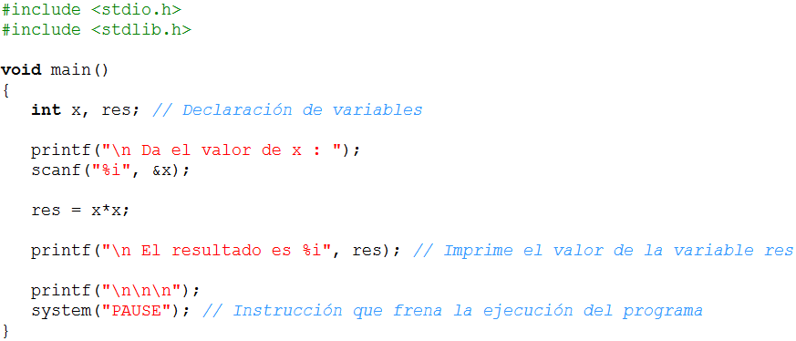

<!DOCTYPE doctype PUBLIC "-//w3c//dtd html 4.0 transitional//en">
<html>
<head>
                    
  <meta content="es-mx" http-equiv="Content-Language" />
<meta content="text/html; charset=utf-8" http-equiv="Content-Type" />
  <title>Calendario</title>

                                 
  <style type="text/css">


.style1 {


	border-width: 1px;


}


.style4 {


	font-family: Arial;


	font-weight: bold;


	font-size: -1;


	color: #FFFFFF;


	text-align: center;


}


.Estilo13 {font-family: Arial, Helvetica, sans-serif; font-size: 14px; }


.style6 {


	font-family: Arial;


	font-size: x-small;


}


.style8 {


	margin-left: 40px;


}


.style12 {


	border-left-color: #C0C0C0;


	border-left-width: 1px;


	border-right-width: 1px;


	border-top-color: #C0C0C0;


	border-top-width: 1px;


	border-bottom-width: 1px;


	background-color: #C0C0C0;


	text-align: center;


}


.style13 {


	font-weight: bold;


	border-width: 1px;


	background-color: #C0C0C0;


}


.style15 {


	border-width: 1px;


	text-align: center;


	font-weight: bold;


	background-color: #C0C0C0;


}


.style16 {


	border-width: 1px;


	text-align: center;


	}


.style19 {


	font-family: Arial, Helvetica;


	font-size: -1;


}


.style21 {


	text-align: center;


}


.style22 {


	font-family: Arial, Helvetica;


	font-size: x-small;


}


.style23 {


	font-weight: bold;


	border-width: 1px;


}


.style24 {


	text-align: left;


}


.style27 {


	text-align: left;


	font-family: Arial;


	font-size: -1;


}


.style29 {


	text-align: left;


	font-family: Arial;


	font-size: x-small;


}


.style30 {


	font-family: Arial;


	font-weight: bold;


	font-size: -1;


	color: #FFFFFF;


	text-align: left;


}


.style31 {


	border-width: 1px;


	background-color: #C0C0C0;


}


.style32 {


	border-width: 1px;


	text-align: center;


	background-color: #C0C0C0;


}


.style33 {


	font-weight: normal;


}


.style34 {


	font-family: Arial;


}


  .auto-style3 {
	color: #330033;
	font-weight: bold;
}


  *{box-sizing:inherit}
  


  .auto-style2 {
	color: #333333;
}


  .auto-style1 {
	font-size: small;
}


    


  .auto-style4 {
	font-family: Arial, Helvetica, sans-serif;
}
.auto-style5 {
	font-family: Arial, Helvetica, sans-serif;
	font-size: small;
}
.auto-style6 {
	border: 1px solid #000000;
}


    


  </style>
</head>
  <body>
     
<center>
<table border="1" width="90%">
	<tbody>
        <tr>
     <td>                             
                                  
      <table border="0" cols="2" width="100%">
     <tbody>
              <tr>
     <td width="76%">                                                   
 
            <div align="right"><b><font face="Arial,Helvetica"><font
 color="#330033"><font size="+1">Laboratorio 2. Aprendiendo a usar, capturar y 
				desplegar datos y uso de operadores&nbsp;</font></font></font></b></div>
     </td>
      <td>
                </td>
     </tr>
                                         
        </tbody>                            
      </table>
                                  
     </td>
     </tr>
                 
  </tbody>    
</table>
    </center>
          
<center>    
<table border="1" cols="1" width="90%">
     <tbody>
        <tr bgcolor="#330033">
     <td><b><font face="Arial,Helvetica"><font color="#330033"><font
 size="-2">.</font></font></font></b></td>
     </tr>
      <tr>
     <td>
     <br>
          <b><font face="Arial,Helvetica"><font color="#330033">Objetivos:</font></font></b> 
        <br>
     &nbsp;                             
      <ul>
                                         
        <ul>
     <li> <font face="Arial,Helvetica"><font color="#333333"><font
 size="-1">Que apliques los conocimientos sobre declaración de variables en el 
	 desarrollo de un programa.</font></font></font></li>
      <li> <font face="Arial,Helvetica"><font color="#333333"><font
 size="-1">Que seas capaz de utilizar las instrucciones de captura y desplegado 
	  de información, así como el uso de operadores</font></font></font></li>
                                         
        </ul>
                                 
      </ul>
                                  
      <hr width="100%"> 
          
     <br>
          <b><font face="Arial,Helvetica"><font color="#330033">Forma de 
	 trabajo:</font></font></b>                              
      <p><font face="Arial,Helvetica"><font color="#333333"><font
 size="-1">Actividad en equipos colaborativos e individual</font></font></font> 
        <br>
     </p>
                               
      <hr width="100%"> 
          
     <br>
          <b><font face="Arial,Helvetica"><font color="#330033">Tiempo estimado:</font></font></b> 
                             
      <p><font face="Arial,Helvetica"><font color="#333333"><font
 size="-1">90 minutos</font></font></font> <br>
     </p>
                               
      <hr width="100%"> 
          
     <br>
          <b><font face="Arial,Helvetica"><font color="#330033">Instrucciones:</font></font></b> 
        <br>
     &nbsp;                             
      <ul>
                                         
        <ul>
     <li> <font face="Arial,Helvetica"><font color="#333333"><font
 size="-1">Intégrate con tu equipo colaborativo y sigue las indicaciones del 
	 profesor.&nbsp;</font></font></font></li>
      <li> <font face="Arial,Helvetica"><font color="#333333"><font
 size="-1">Junto con tus compañeros de equipo, analiza cada uno de los 
	  ejercicios que se presentan a continuación. Identifiquen, en equipo, cual 
	  sería el algoritmo para la solución de cada uno de los ejercicios. 
	  Recuerden documentarlos en sus hojas membretadas.&nbsp;</font></font></font></li>
      <li> <font face="Arial,Helvetica"><font color="#333333"><font
 size="-1">De manera individual escribe un programa en C para cada uno de los 
	  ejercicios. Recuerda basarte en el algoritmo que se generó en el equipo.&nbsp;</font></font></font></li>
      <li> <font face="Arial,Helvetica"><font color="#333333"><font
 size="-1">Una vez que hayas terminado tu programa, es tu responsabilidad ayudar 
	  a tus compañeros de equipo a que terminen su programa.</font></font></font></li>
      <li> <font face="Arial,Helvetica"><font color="#333333"><font
 size="-1">Entrega, vía la plataforma, los archivos <b>*.c</b> que contengan los 
	  programas en C.&nbsp;</font></font></font></li>
                                         
        </ul>
                                 
      </ul>
                                  
      <hr width="100%">                             
      <blockquote><font face="Arial,Helvetica"><font color="#000000"><font
 size="-1">El siguiente programa lee una variable de tipo entera y escribe el 
		  valor de "res" en la pantalla. Utiliza este programa como ejemplo para 
		  desarrollar tu laboratorio.</font></font></font>                        
              
        <p>
     </p>
                                       
        <p><b><font face="Arial,Helvetica"><font color="#3333ff">Sección 1.- 
		Operaciones con variables "Enteras"</font></font></b> </p>
                                       
        <blockquote><font face="Arial,Helvetica"><font size="-1">Escribe un 
			programa completo en C, que obtenga el<small><font
 face="Helvetica, Arial, sans-serif"> </font></small></font></font><small><font
 face="Helvetica, Arial, sans-serif">número de billetes de las siguientes 
			denominaciones: $200, $50, $20 y $1 para una cantidad <b>X </b>
			proporcionada por el usuario. 			<br>
              <span class="auto-style1">&nbsp;&nbsp;&nbsp;&nbsp;&nbsp;&nbsp;&nbsp;&nbsp;&nbsp;&nbsp;&nbsp;&nbsp;&nbsp;&nbsp;&nbsp;&nbsp;&nbsp;&nbsp;&nbsp;
            </span><span class="auto-style1"></span><br>
              <span class="auto-style1">Por ejemplo para una cantidad de $1343 
			se requieren:</span></font>     		   </small>     		        		  
     		   <br>
              <br>
              <small><font face="Helvetica, Arial, sans-serif"><span
 class="auto-style1">&nbsp;&nbsp;&nbsp; &nbsp;&nbsp;&nbsp; &nbsp;&nbsp;&nbsp; &nbsp;&nbsp;&nbsp; &nbsp;&nbsp;&nbsp; Billetes de $200 =&gt; 6</span><br
 class="auto-style1">
     <span class="auto-style1">&nbsp;&nbsp;&nbsp;&nbsp;&nbsp;&nbsp;&nbsp;&nbsp;&nbsp;&nbsp;&nbsp;&nbsp;&nbsp;&nbsp;&nbsp;&nbsp;&nbsp;&nbsp;&nbsp; Billetes de $50 =&gt; 2</span><br class="auto-style1">
     <span class="auto-style1">&nbsp;&nbsp;&nbsp;&nbsp;&nbsp;&nbsp;&nbsp;&nbsp;&nbsp;&nbsp;&nbsp;&nbsp;&nbsp;&nbsp;&nbsp;&nbsp;&nbsp;&nbsp;&nbsp; Billetes de $20 =&gt; 2</span><br class="auto-style1">
     <span class="auto-style1">&nbsp;&nbsp;&nbsp;&nbsp;&nbsp;&nbsp;&nbsp;&nbsp;&nbsp;&nbsp;&nbsp;&nbsp;&nbsp;&nbsp;&nbsp;&nbsp;&nbsp;&nbsp;&nbsp; Billetes de $1 =&gt; 3</span></font></small><br>
              <br>
              <font face="Arial,Helvetica"><font size="-1">Solicite una cantidad 
			entera <b>X</b> al usuario y calcule los billetes de cada 
			denominación. Despliegue los resultados en pantalla.</font></font></blockquote>
                                          
        <ul>
              <b><font face="Arial,Helvetica"><font size="-1">Variables utilizadas 
			  : X, b200, b50, b20, b1 y residuo.</font></font></b>                  
                          
          <p><b><font face="Arial,Helvetica"><font size="-1"><font
 color="#800080">Guardar esta sección con el nombre: </font><font
 color="#3333ff">A1_Matricula.c</font></font></font></b></p>
                                       
        </ul>
                                          
        <p><br>
            <b><font face="Arial,Helvetica"><font color="#000099">&nbsp;</font><font
 color="#3333ff">Sección 2.- Operaciones con variables de "Punto Flotante"</font></font></b> 
          </p>
                                       
        <blockquote><font face="Arial,Helvetica"><font color="#000000"><font
 size="-1">Escribe un programa completo en C que calcule el área <b>(A)</b>
  		  y volumen (<b>V</b>) de un cono. Los valores dados por el usuario son 
			el radio <b>(r)</b>, la altura <b>(h)</b> y la generatriz (g) del 
			cono . El resultado obtenido (volumen y área) deben ser desplegado 
			en la pantalla.&nbsp;</font></font></font>                                
            
          <p>
     </p>
	  <p class="auto-style5"><strong>Casos de prueba: </strong></p>
	  <class="auto-style51">
	  <p class="auto-style48">
	  <font face="Arial,Helvetica" size="-1" class="auto-style1"><strong>
	  <span class="auto-style4">Input:</span></strong><span class="auto-style4"> r (radio) 
	  </span> </font><br class="auto-style5">
	  <class="auto-style49">
	  <font face="Arial,Helvetica" size="-1" class="auto-style1"><strong>
	  <span class="auto-style4">Input:</span></strong><span class="auto-style4"> h (altura)</span></font><br class="auto-style5">
	  <class="auto-style48">
	  <font face="Arial,Helvetica" size="-1" class="auto-style1"><strong>
	  <span class="auto-style4">Input:</span></strong><span class="auto-style4"> g (generatriz) 
	  </span> </font><br class="auto-style5">
	 <class="auto-style49">
	  <font face="Arial,Helvetica" size="-1" class="auto-style1"><strong>
	  <span class="auto-style4">Output:</span></strong><span class="auto-style4"> a (area)<class="auto-style48"> <br>
	 <class="auto-style49"><strong>
	  Output:</strong> v (volumen)&nbsp;</span></font></p>
	  <p class="auto-style48">
	  <class="auto-style49">
	  <class="auto-style48">
	  <class="auto-style49">
	  <table class="auto-style6" style="width: 50%">
		  <tr>
			  <td class="auto-style6">
			  <p class="auto-style34"><strong><span class="auto-style5">Input:
			  </span></strong><span class="auto-style5">5</span><br class="auto-style5">
			  <class="auto-style43"><strong><span class="auto-style5">Input: </span></strong>
			  <span class="auto-style5">2</span><br class="auto-style5">
			  <class="auto-style43"><strong><span class="auto-style5">Input: </span></strong>
			  <span class="auto-style5">3</span><br class="auto-style5">
<class="auto-style43"><strong><span class="auto-style5">Output: </span>
			  </strong><span class="auto-style35"><span class="auto-style5">125.66</span><br class="auto-style5">
			  <class="auto-style43">
			  <class="auto-style43">
			  <class="auto-style43"><span class="auto-style4"><strong>
			  <span class="auto-style1">Output: 
			  </span> 
			  </strong><span class="auto-style1">52.36</span></span></span></p>
			  </td>
			  <td class="auto-style6">
					  <p class="auto-style34">
					  <class="auto-style43">
					  <class="auto-style43">
					  <class="auto-style43"><strong><span class="auto-style5">Input:
			  </span></strong><span class="auto-style5">3.5</span><br class="auto-style5">
			  <class="auto-style43"><strong><span class="auto-style5">Input: </span></strong>
			  		<span class="auto-style5">6.2</span><br class="auto-style5">
			  <class="auto-style43"><strong><span class="auto-style5">Input: </span></strong>
			  		<span class="auto-style5">7.3</span><br class="auto-style5">
<class="auto-style43"><strong><span class="auto-style5">Output: </span>
			  </strong><span class="auto-style35"><span class="auto-style5">118.75</span><br class="auto-style5">
			  		<class="auto-style43">
					  <class="auto-style43">
					  <class="auto-style43"><span class="auto-style4"><strong>
					  <span class="auto-style1">Output: 
			  </span> 
			  </strong><span class="auto-style1">79.53</span></span></span></p>
	  </td>
	  <td class="auto-style6">
			  <p class="auto-style34">
			  <class="auto-style43">
			  <class="auto-style43">
			  <class="auto-style43"><strong><span class="auto-style5">Input:
			  </span></strong><span class="auto-style5">2.5</span><br class="auto-style5">
			  <class="auto-style43"><strong><span class="auto-style5">Input: </span></strong>
			  <span class="auto-style5">4.2</span><br class="auto-style5">
			  <class="auto-style43"><strong><span class="auto-style5">Input: </span></strong>
			  <span class="auto-style5">5.4</span><br class="auto-style5">
<class="auto-style43"><strong><span class="auto-style5">Output: </span>
			  </strong><span class="auto-style35"><span class="auto-style5">62.05</span><br class="auto-style5">
			  <class="auto-style43">
			  <class="auto-style43">
			  <class="auto-style43"><span class="auto-style4"><strong>
			  <span class="auto-style1">Output: 
			  </span> 
			  </strong><span class="auto-style1">27.49</span></span></span></p>
			  </td>
		  </tr>
	  </table>
	  </p>
	 <class="auto-style84">
	 <class="auto-style84">
	 <class="auto-style84">
	 <class="auto-style84">
	 <class="auto-style84">
	 <class="auto-style84">
	  </span></span>
	  </font>
	  	  <p><b><font size="-1" face="Arial,Helvetica"><font
 color="#800080">El valor de</font><font color="#3333ff"> PI </font><font
 color="#800080">debe ser declarado como una constante </font><font
 color="#3366ff">3.141592.</font></font></b></p>
            </blockquote>
                                          
        <ul>
              <b><font face="Arial,Helvetica"><font size="-1"><font
 color="#800080">Guardar esta sección con el nombre: </font><font
 color="#3333ff">A2_Matricula.c</font></font></font></b>                
                   
        </ul>
     </blockquote>
                                  
      <font color="#ffffff" face="Arial,Helvetica">
                                                  
      <hr width="100%">  
	 
	   <br>
            <font face="Arial,Helvetica"><span class="auto-style3">
	 Especificaciones de entrega:</span></font><span class="auto-style2"> </span>         
		  </font><br><br class="auto-style1">
	   <ul>
                                                             
           <ul>
       		<li> <font
 size="-1" color="#000000" face="Arial,Helvetica">Formato de entrega: <strong>c</strong></font></li>
			   <li> <font
 size="-1" color="#000000" face="Arial,Helvetica">Nombre de los entregables: <strong>
			   A1_matrícula.c</strong> y <strong>A2_matrícula.c</strong></font></li>
        <li> <font
 size="-1" color="#000000" face="Arial,Helvetica">Medio de entrega: Se entrega 
		en Canvas en la sección de <strong>Laboratorio: Cálculos</strong></font></li>
                                                             
        </ul>
                                                 
      </ul>
	   <p><font
 size="-1" color="#000000" face="Arial,Helvetica"><strong>&nbsp;&nbsp;&nbsp;&nbsp;&nbsp;&nbsp;&nbsp;&nbsp;&nbsp;&nbsp;&nbsp;&nbsp;&nbsp;&nbsp;&nbsp;&nbsp;&nbsp;&nbsp;&nbsp;&nbsp;&nbsp; 
	   Instrucciones para enviar tus archivos por Canvas:</strong></font></p>
	   <ul>
                                                             
           <ul>
			   <li><font
 size="-1" color="#000000" face="Arial,Helvetica">Haz clic en la actividad de <strong>
			   Laboratorio: Cálculos</strong>.</font></li>
			   <li><font
 size="-1" color="#000000" face="Arial,Helvetica">Haz clic en el botón de
			   <strong>Entregar tarea</strong>.</font></li>
			   <li><font
 size="-1" color="#000000" face="Arial,Helvetica">En el fólder de <strong>Carga 
			   del archivo</strong>, haz clic en el botón de <strong>Examinar
			   </strong>y localiza el archivo *.py. Si necesitas agregar más 
			   archivos, haz clic en <strong>+Agregue otro archivo</strong>, haz 
			   clic en el botón de <strong>Examinar </strong>y localiza el otro 
			   archivo *.py. </font></li>
			   <li><font
 size="-1" color="#000000" face="Arial,Helvetica">Cuando hayas terminado de 
			   subir tus archivos, haz clic en el botón de <strong>Entregar 
			   tarea</strong> y listo!!</font></li>
		   </ul>
                                                 
      </ul>
			</td>
     </tr>
                 
  </tbody>    
</table>
    </center>
          
</body>
</html>
